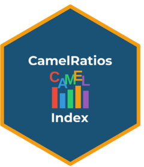
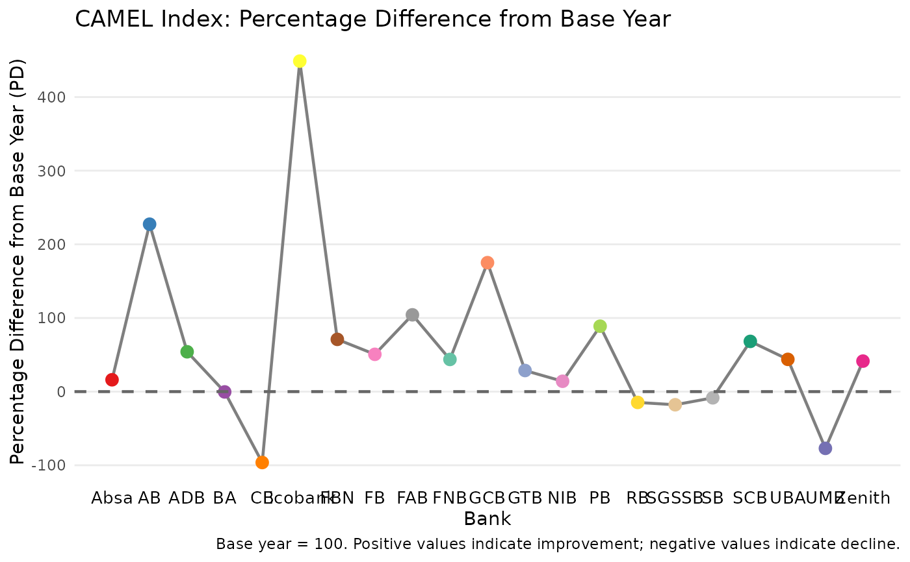
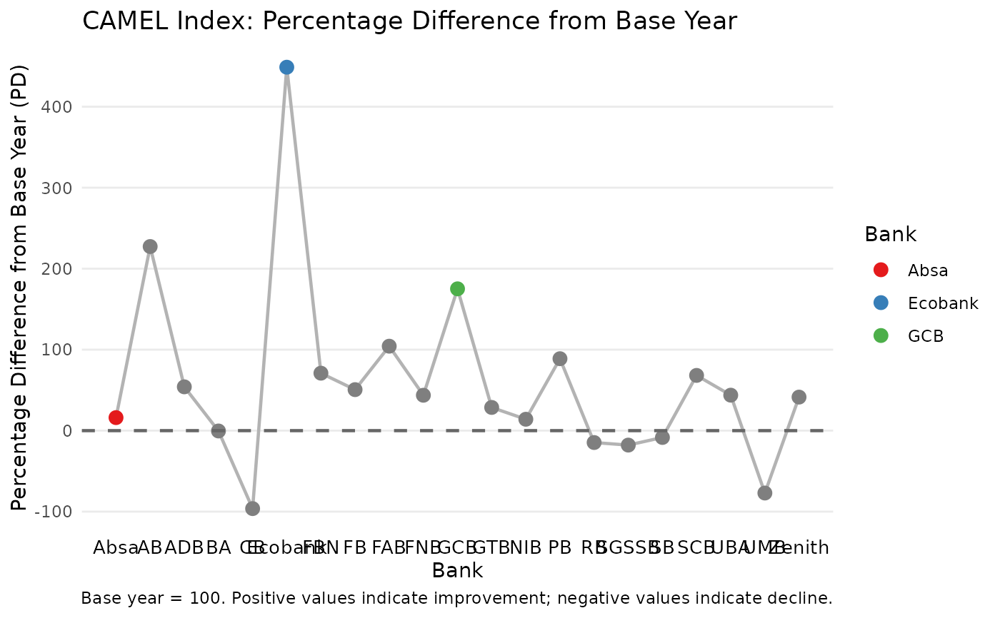
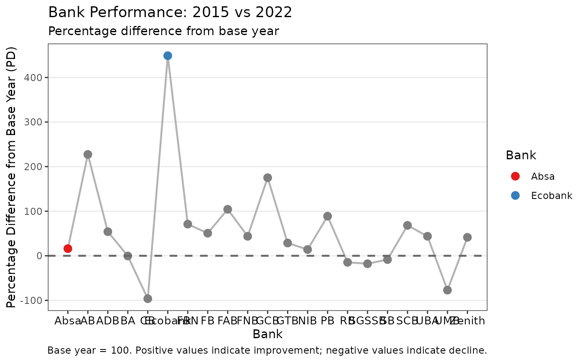

Plot CAMEL Index Percentage Differences
Source:R/plot_camel_index.R
plot_camel_index.RdCreates a ggplot2 line graph showing the percentage difference (PD) from the base year for each bank, enabling visual comparison of bank performance across the CAMEL framework.
Usage
plot_camel_index(
x,
highlight_banks = NULL,
add_reference_line = TRUE,
point_size = 3,
line_size = 0.8,
colour_palette = NULL,
title = NULL,
subtitle = NULL,
caption = NULL,
theme_fn = ggplot2::theme_minimal,
...
)
# S3 method for class 'camel_index'
autoplot(object, ...)Arguments
- x
An object of class
"camel_index"returned bycamel_index().- highlight_banks
Optional character vector of bank names to highlight with distinct colours. All other banks are shown in grey.
- add_reference_line
Logical indicating whether to add a horizontal reference line at PD = 0 (the base year level). Default is
TRUE.- point_size
Numeric, size of points. Default is
3.- line_size
Numeric, size of line segments. Default is
0.8.- colour_palette
Character vector of colours for highlighted banks. Default uses a ColorBrewer qualitative palette.
- title
Optional plot title. If
NULL(default), a descriptive title is generated.- subtitle
Optional plot subtitle.
- caption
Optional plot caption. If
NULL(default), a caption describing the base year is generated.- theme_fn
A ggplot2 theme function. Default is
ggplot2::theme_minimal().- ...
Additional arguments passed to
ggplot2::geom_line()andggplot2::geom_point().- object
An object of class
"camel_index"(for theautoplotgeneric).
Examples
# Basic plot
result <- camel_index(camel_2015, camel_2022)
#> ℹ Using 3 factors (Kaiser criterion suggests 2 for base year).
plot_camel_index(result)

# Highlight specific banks
plot_camel_index(result, highlight_banks = c("Absa", "Ecobank", "GCB"))

# Custom styling
plot_camel_index(
result,
highlight_banks = c("Absa", "Ecobank"),
title = "Bank Performance: 2015 vs 2022",
subtitle = "Percentage difference from base year",
color_palette = c("#E41A1C", "#377EB8"),
theme_fn = ggplot2::theme_bw
)
#> Warning: Ignoring unknown parameters: `colour_palette`
#> Warning: Ignoring unknown parameters: `colour_palette`
